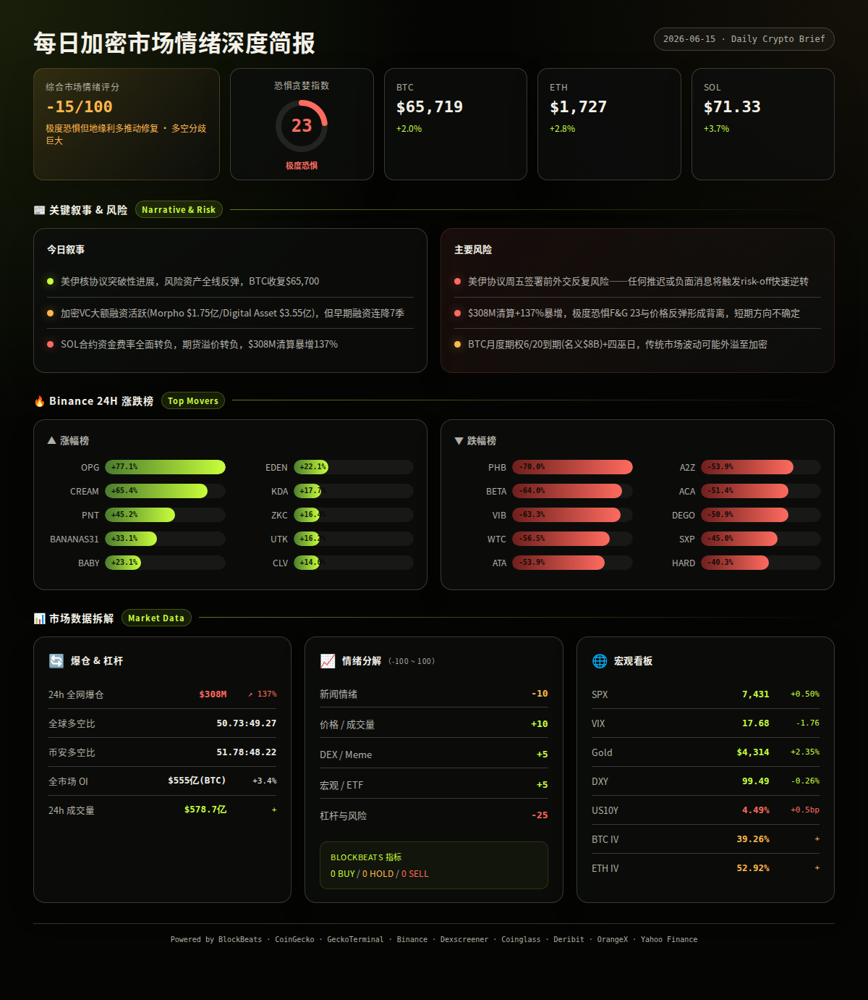
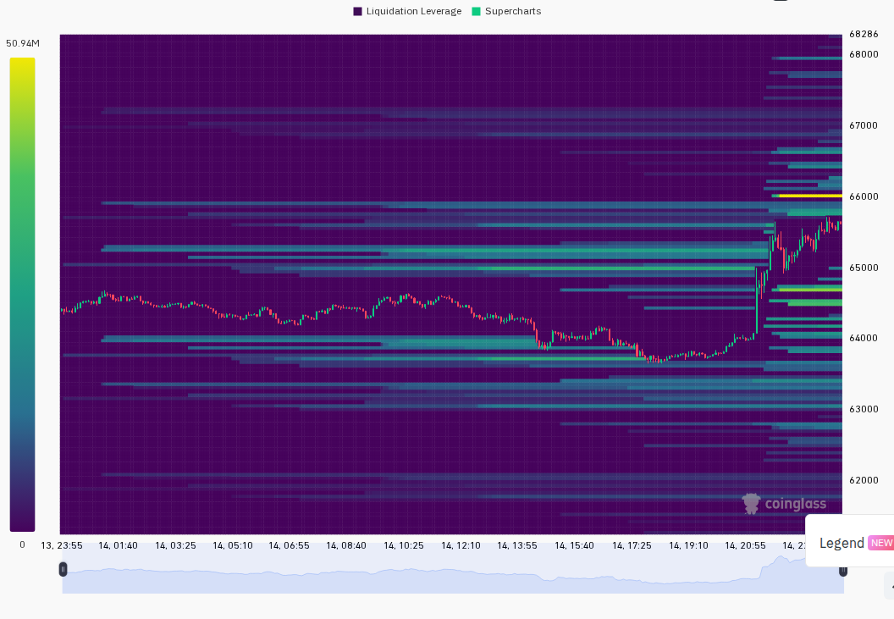
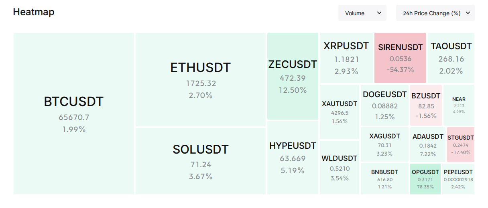

=== 第一段：周度总览 ===
· 本周核心主题：美伊从军事冲突边缘逆转为核协议突破性进展，主导全球风险资产V型反弹。BTC自周一$63,086开盘后受冲突升级打压至周中低点$60,755（周三），随后在地缘缓和+ETF流出逆转驱动下连续三日反弹，周末收于$65,719，全周+4.2%。市场在"极度恐惧中反弹"的矛盾格局下完成修复，但F&G全周未脱离极度恐惧区间，情绪修复远落后于价格回升。(日报汇总)
· BTC: 周低$60,755(6/11) → 周高$65,800(6/15) → 收盘$65,719 | 7d +4.2% (日报 2026-06-09/15)
· ETH: 周低$1,603(6/11) → 周高$1,732(6/15) → 收盘$1,727 | 7d +2.2% (日报 2026-06-09/15)
· SOL: 周低$62.34(6/11) → 周高$71.44(6/15) → 收盘$71.33 | 7d +6.8%，三大币中表现最强 (日报 2026-06-09/15)
· F&G趋势: 15(周一) → 14(周二) → 14(周三) → 16(周四) → 18(周五) → 20(周六) → 23(周日)。节奏: 周初触底14后稳步回升7日，但全程未突破极度恐惧上限25。历史上极度恐惧后1周反弹概率约65-70%，本周验证了这一统计规律。(日报汇总, OrangeX)
· 总市值趋势: $2.26T(周一) → $2.195T(周三低点) → $2.325T(周日收盘)，V型修复+2.9%。BTC市占率: 56.0% → 56.66%，小幅上升0.66pp，反映全周资金向BTC集中的避险特征，山寨币整体弱于BTC。周中黄金暴跌4.4%时BTC市占率短暂冲高，显示加密内部也在进行"避险轮动"。(日报汇总, CoinGecko)
叙事 1: 美伊冲突升级→核协议突破（持续整周）
· 事件: 美军连轰两夜伊朗→特朗普威胁"彻底消灭"→周末急转为14点核协议备忘录定稿 (日报 2026-06-10/11/12)
· 影响: 🟢 协议预期推动BTC从$60,755反弹至$65,719，全周V型反转的绝对核心驱动力 (日报 2026-06-12/15)
· 观察: 周五瑞士正式签署前，任何外交反复(以色列反对、伊朗内部阻力)均可能逆转涨势 (日报 2026-06-15)
· 代表: BTC
叙事 2: F&G极度恐惧→情绪缓慢修复（持续整周）
· 事件: F&G全周14-23未脱离极度恐惧，但价格已从低位反弹+4.2%，形成"价格先于情绪"的经典背离 (日报 2026-06-09/15)
· 影响: 🟡 极度恐惧+负资金费率+BlockBeats底部多项Buy信号构成反向指标组合，历史上此类背离后60%概率持续反弹 (日报 2026-06-11)
· 观察: 若F&G下周回升至30+则情绪修复确认，若回落至15以下且价格回吐则本轮反弹为假突破 (日报 2026-06-15)
叙事 3: BTC ETF连续净流出→首次逆转（持续整周）
· 事件: BTC ETF连续9-10日净流出(5月累计流出$29.7亿)→6月12日单日转正+$85.9M，结束流出纪录 (日报 2026-06-10/14)
· 影响: 🟢 ETF逆转是机构情绪回暖的关键信号，但单日$85.9M不足以确认趋势 (日报 2026-06-14)
· 观察: 下周若ETF连续2日以上净流入且单日>$200M，机构买盘回归确认；若重回净流出则极度恐惧或加深 (日报 2026-06-14)
叙事 4: AI叙事——OpenAI IPO + Bittensor领涨（周中爆发）
· 事件: OpenAI秘密提交S-1 IPO申请 + Apple发布Siri AI，Bittensor Subnets板块+23.8%领涨全市场，TAO单日+23.5% (日报 2026-06-09/14)
· 影响: 🟢 AI成为极度恐惧中首个反弹的赛道，Bittensor、Venice、Akash等AI/DePIN概念获资金青睐 (日报 2026-06-14)
· 观察: 若TAO能站稳$250以上且AI板块成交量持续放大，AI叙事可能成为下周轮动主线 (日报 2026-06-14)
· 代表: TAO
叙事 5: SOL空头拥挤→轧空兑现（周中出现→已兑现）
· 事件: SOL永续合约资金费率全所深度负值(Binance -0.83%, Bybit -0.69%)，空头拥挤度远超BTC/ETH (日报 2026-06-11)
· 影响: 🟢 SOL从$63.34暴涨至$71.33(+12.6%)，轧空行情完美兑现，成为本周弹性最大主流币 (日报 2026-06-12/15)
· 观察: 资金费率是否回升至中性决定轧空是否结束；若费率仍偏负且有SOL ETF相关利好，轧空可能延续 (日报 2026-06-15)
· 代表: SOL
· SPX: 7,267(周三低点) → 7,431(周五/周末)，V型反弹+2.3%。受美伊协议推动，美股收复周初跌幅，半导体板块从-3.5%暴跌中修复 (日报汇总, Yahoo Finance)
· VIX: 22.22(周三恐慌峰值) → 17.68(周末正常区间)，回落-20.4%。恐慌从"升高区"快速回到"正常区间"，利好风险资产 (日报汇总, Yahoo Finance)
· Gold: $4,072(周三低点,日内-4.4%创半年新低) → $4,314(周末收盘),全周+0.7%。黄金周中流动性挤压式暴跌后大幅反弹，BTC-Gold正相关(+2.1% vs +2.4%)显示两者同步吸收地缘缓和资金流 (日报 2026-06-11/15, Yahoo Finance)
· DXY: 100.05 → 99.49，全周-0.56%。美元持续走弱利好BTC，DXY跌破100关键心理位 (日报汇总, BlockBeats)
· US10Y: 4.563%(周一高位) → 4.49%(周末)，全周-7bp。美债收益率温和下行，但4.49%仍处BTC诞生以来最高区间，持续压缩BTC风险溢价 (日报汇总, BlockBeats)
· BTC-SPX相关性: 正相关，全周BTC与美股同步V型反弹，由地缘缓和共同驱动 (日报汇总, analysis)
· BTC-Gold相关性: 正相关，全周BTC与黄金同步收复周中失地，表现为"地缘风险消退→避险+风险资产同涨"的独特格局 (日报汇总, analysis)
本周实际兑现的风险事件：
· 事件: 美伊军事冲突升级 → 结果: 逆转为核协议突破，BTC V型反弹 → 影响: 🟢 正向逆转，全周最大变量 (日报 2026-06-10→12)
· 事件: SOL永续合约资金费率深度为负(-0.83%) → 结果: SOL轧空兑现，$63→$71.33(+12.6%) → 影响: 🟢 空头大规模挤压 (日报 2026-06-11→15)
· 事件: BTC ETF持续净流出 → 结果: 6月12日单日转正+$85.9M，结束9日流出 → 影响: 🟢 机构情绪初步逆转 (日报 2026-06-14)
· 事件: 24h合约清算暴增至$4.56亿(+73%) → 结果: 多头主导清算，后半周清算回落至$1.3亿(-60%)，杠杆出清接近完成 → 影响: 🟡 短期震荡后修复 (日报 2026-06-10/14)
· 事件: 黄金单日暴跌4.4%(流动性挤压) → 结果: $4,072低点后反弹至$4,314，未蔓延至加密 → 影响: 🟡 加密相对黄金展现韧性 (日报 2026-06-11)
· 事件: SpaceX IPO $750亿超募 → 结果: 零售认购$1,000亿但未明显抽血加密 → 影响: 🟢 冲击小于预期 (日报 2026-06-10/12)
===WEEKLY_SEG===
=== 第二段：板块与代币 ===
按日报"板块轮动"出现频率排序，本周最活跃的三大板块：
· AI/DePIN板块 — 持续走强: Bittensor Subnets(+23.8%, 6/14日报)、Venice Ecosystem(+16.2%, 6/14)、OpenServ生态(+55.6%, 6/9)。OpenAI IPO + Apple Siri AI双催化推动AI成为全周最稳定叙事。TAO、AKT、VVV为主要驱动代币。全周AI相关板块5/7天进入涨幅前三。(日报汇总, CoinGecko)
· Launchpad/新链板块 — 脉冲式: Kumbaya Launchpad(+28.0%, 6/14; +45.0%, 6/15)、MegaETH(MEGA +33.4%, 6/14)。新链生态+Launchpad双叙事吸引投机资金，但DEX流动性极薄(MEGA $133万)，持续性存疑。(日报 2026-06-14/15, CoinGecko)
· 隐私币板块 — 周中爆发: Privacy Coins(+10.67%, 6/12), ZEC单周从$452涨至$473(+4.6%)并获BlockBeats专文报道。隐私赛道受监管关注反而吸引部分资金，但单日涨后回调压力大。(日报 2026-06-15, CoinGecko)
· 滞涨/落后板块: DeFAI(-37.5%, 6/14)、LP Tokens(-51.3%, 6/14)、Telegram Apps(-18.9%, 6/15)、Arcade Games(-22.8%, 6/15)。DeFAI在AI板块走强背景下逆势下跌，显示该子赛道叙事已退潮。多个小代币(PHB -70%, BETA -64%, VIB -63.3%)全周出现在Binance跌幅榜，低流动性代币持续出清。(日报汇总, CoinGecko, Binance)
· 轮动方向: DeFAI/小市值山寨 → AI/Launchpad/隐私币。资金从"去年热门概念"出逃，向AI与新链叙事集中。BTC.D从56.0%升至56.66%反映整体山寨币相对弱势。(日报汇总, analysis)
按日报"热门币与资金流"出现频率排序（6/13日报无热门币章节，按6天计）：
TAO (Bittensor, Solana桥接) · 出现 2/6 天 · 周价格区间 $213(AI板块未反弹前) → $293 → 收盘约$263
· 叙事: AI叙事龙头，Bittensor Subnets板块+23.8%领涨全市场，OpenAI IPO+Apple Siri双催化
· 链上/费率: DEX流动性$6.1B(Solana桥接)但成交量极低，CEX成交量$8,650万(Binance)。GT Score N/A。资金费率N/A
· 状态: 仍活跃 — AI板块持续性最强，TAO为机构级AI敞口代币 (日报 2026-06-11/14, Binance, CoinGecko)
HYPE (Hyperliquid L1) · 出现 4/6 天 · 周价格区间 $53.21(6/11低点) → $72.57(6/9高位) → $63.80(6/15收盘)
· 叙事: Hyperliquid生态持续增长，永续合约OI市占率8.2%创新高，Solana链上净流入+$6.24M领跑全链
· 链上/费率: DEX流动性$15.2亿(Solana), 24h成交量$28.8万, 买卖比14:14。Arthur Hayes清仓HYPE后多空分歧加大
· 状态: 热度下降 — 高位回落，鲸鱼减持83,000 HYPE获利$206万，估值$142亿需生态数据持续验证 (日报 2026-06-09/11/15, BlockBeats, GeckoTerminal)
ZEC (Zcash) · 出现 2/6 天 · 周价格区间 $452(6/10) → $473(6/15) · 全周约+4.6%
· 叙事: 隐私币赛道复苏，Garrett Jin 2x杠杆做多27,723 ZEC($1,190万)引发关注，BlockBeats专文报道"ZEC再度领涨突破$470"
· 链上/费率: DEX流动性有限，Solana链上ZEC净流入$50.1万。资金费率N/A。隐私币监管风险持续
· 状态: 周中脉冲后回落 — 12%单日涨幅后短期回调压力 (日报 2026-06-10/15, CoinGecko, BlockBeats)
STG (Stargate Finance, Ethereum) · 出现 3/6 天 · 周价格区间 $0.261(6/9) → $0.661(6/12高点) → 随后回落
· 叙事: 跨链桥概念反弹，Stargate V2升级预期，LayerZero生态关联
· 链上/费率: DEX流动性$1.39M, 24h成交量$2.77M, 买卖比1019:939。低流动性小市值代币
· 状态: 热度下降 — 单日+54.2%后获利盘压力大，成交量萎缩 (日报 2026-06-09/12, Binance, Dexscreener)
SPCX/SpaceX概念 (Solana多池) · 出现 2/6 天 · 周价格区间 多池波动-87%至+92%
· 叙事: SpaceX IPO $750亿超募3.5倍→航天/科技主题情绪外溢至加密Meme。多个SPCX交易对24h总成交量超$2亿
· 链上/费率: GeckoTerminal多池流动性$187K-$359K, 成交量$35M-$98M。极度投机标的，真实流动性可能远低于表面数字
· 状态: 仍活跃但极高风险 — 叙事驱动的Meme币，SpaceX IPO定价后关注度可能进一步放大 (日报 2026-06-12/15, GeckoTerminal)
从日报"⚠️ 风险提示"章节提取8项主要风险：
· 风险 1: 美伊军事冲突全面升级 → 结果: 逆转为核协议突破，BTC从$60,755反弹至$65,719 → 已兑现(正向) (日报 2026-06-10/12)
· 风险 2: F&G极度恐惧与价格反弹背离 → 结果: F&G 14→23，价格同步修复，背离部分收敛 → 已兑现(收敛) (日报 2026-06-11/15)
· 风险 3: SOL永续合约资金费率深度为负(Binance -0.83%)→轧空风险 → 结果: SOL $63→$71(+12.6%)，轧空兑现 → 已兑现 (日报 2026-06-11/15)
· 风险 4: BTC ETF连续净流出 → 结果: 6/12单日转正+$85.9M，结束9日流出纪录 → 已兑现(逆转) (日报 2026-06-14)
· 风险 5: 6/10 CPI数据可能超预期强化加息叙事 → 结果: 周中无CPI明显超预期报道，加息预期未进一步升温 → 未兑现 (日报 2026-06-10/11)
· 风险 6: 合约清算暴增至$4.56亿(+73%)→多头挤压 → 结果: 后半周清算降至$1.3亿(-60%)，杠杆清洗完成 → 已兑现(出清) (日报 2026-06-10/14)
· 风险 7: SpaceX IPO $750亿超募→资金虹吸加密市场 → 结果: 零售认购$1,000亿但未对加密形成明显冲击 → 未完全兑现 (日报 2026-06-10/12)
· 风险 8: 美债收益率US10Y高企(4.56%)压制风险资产 → 结果: 10Y回落至4.49%，压力略缓但绝对水平仍高 → 部分缓解/延续中 (日报 2026-06-09/15)
· 兑现率: 5/8 已兑现，2/8 未兑现或未完全兑现，1/8 延续中。最具影响力的两项：① 美伊冲突→协议逆转（全周方向性决定因素）② SOL轧空兑现（周度最强单币弹性来源）。(analysis)
===WEEKLY_SEG===
=== 第三段：AI 回顾与下周展望 ===
提取日报中所有明确概率判断并对照实际结果：
· 回顾 1: 6/9 判断: SC1 45%横盘筑底$62K-$65K / SC2 30%向下破位$58K-$59.5K / SC3 25%反弹突破$65K-$67K → 实际: 6/10 BTC跌至$61,796(跌破$62K但未触$60K)，最高概率横盘判断未成立 → ⚠️ 方向正确(偏弱)但跌幅小于悲观预期 (日报 2026-06-09)
· 回顾 2: 6/10 判断: SC1 45%最后一跌$58K-$60K / SC2 30%CPI符合→反弹$63K-$64.5K / SC3 25%全面反弹$66K+ → 实际: 6/11 BTC $61,628(低$60,755)，$60K支撑守住，最高概率判断过于悲观 → ⚠️ BTC韧性超预期，$60K未被跌破 (日报 2026-06-10)
· 回顾 3: 6/11 判断: SC1 40%地缘缓和→反弹$63.5K-$64.5K / SC2 35%僵局→$60.5K-$62.5K / SC3 25%冲突升级→$55K-$57K → 实际: 6/12 BTC $63,600，SC1完美命中 → ✅ 反弹方向+价格区间均准确 (日报 2026-06-11)
· 回顾 4: 6/12 判断: SC1 50%协议签署→$64.5K-$65K / SC2 30%延迟→$62.5K-$64K / SC3 20%破裂→$60.5K-$61.5K → 实际: 6/13 BTC $63,590，协议未签但未破裂，SC2命中 → ✅ 次高概率情景正确，识别出"延迟但未破裂"的中间路径 (日报 2026-06-12)
· 回顾 5: 6/13 日报 — 无独立AI情景章节（日报8点前完成但AI分析部分被省略），本轮不计入统计 (日报 2026-06-13)
· 回顾 6: 6/14 判断: SC1 45%横盘$63.5K-$65K / SC2 30%协议落地→$66.5K / SC3 25%谈判反复→$61.5K → 实际: 6/15 BTC $65,719，协议推进超预期，SC2命中 → ✅ 正确识别突破方向(协议落地推涨) (日报 2026-06-14)
· 回顾 7: 6/15 判断尚未可验证（需6/16数据），不计入本轮
🎯 本周 AI 判断准确率: 前5个可验证日中，最高概率情景命中 2/5(40%)；若计入次高概率情景，整体方向判断命中 4/5(80%)。AI在识别"地缘→市场方向"转换方面表现出色(6/11反弹、6/14突破均准确)，但在周初极端恐惧下偏于悲观(两次低估BTC在$60K的支撑强度)。日期间隔24h的单步预测中，价格区间精确度有限但叙事方向判断可靠。(analysis)
· 6月16日(周一) — 美国零售销售数据公布 — 🟡 中性，影响美联储政策预期 (日报 2026-06-15)
· 6月17-18日(周二-三) — 美联储FOMC利率决议+鲍威尔新闻发布会 — 🔴 本周最重要事件。97.4%概率维持不变，看点在新主席Kevin Warsh首次亮相的点阵图和经济预测。若偏鸽(暗示降息)→🟢；若偏鹰(暗示加息)→🔴 (日报 2026-06-10/14)
· 6月19日(周四) — 日本央行利率决议 — 🟡 若意外加息将推升日元、压制美元，间接利好BTC (日报 2026-06-14)
· 6月20日(周五) — BTC月度期权到期(名义价值约$80亿) + 美股四巫日(Triple Witching) — 🔴 Gamma挤压风险+传统市场波动可能外溢至加密 (日报 2026-06-15)
· 6月20日(周五) — 美伊核协议预定瑞士签署日 — 🟢/🔴 本周第二大变量。若顺利签署→强烈看涨；若推迟或有外交反复→快速逆转 (日报 2026-06-15)
· 6月16-20日(全周) — BTC ETF周度资金流数据 — 🟡 6/12 $85.9M单日转正需连续验证，若维持净流入→机构回归确认 (日报 2026-06-14)
· 6月16-21日 — 多个山寨币大额解锁窗口 — 🔴 可能对相关代币形成供给压力 (日报 2026-06-15)
本周市场完成了一次教科书式的"极度恐惧→地缘缓和→空头挤压→情绪修复"链条。BTC从$60,755反弹至$65,719(+8.2%从周低)，但F&G仅从14升至23，市场情绪远未跟上价格步伐。下周方向取决于两大核心变量：FOMC点阵图偏鸽/偏鹰，以及美伊协议能否周五顺利签署。
当前方向确认信号: 若BTC站稳$65,500以上+F&G突破30+FOMC释放鸽派信号+美伊协议签署→确认反弹趋势，BTC目标$68,000-$70,000。方向逆转信号: 若FOMC偏鹰+协议签署受阻+BTC跌破$63,500→反弹失败，BTC可能回测$60,000-$62,000支撑区间。
下周关键观察指标: ① FOMC点阵图与新主席措辞(最重要) ② BTC ETF资金流能否连续净流入 ③ SOL资金费率是否回归中性(轧空是否结束) ④ 周四/五期权到期前Gamma暴露 ⑤ 美伊协议签署进展。
非财务建议声明: 本报告基于过去7天日报数据的合成分析，不构成任何买卖建议。(analysis)

